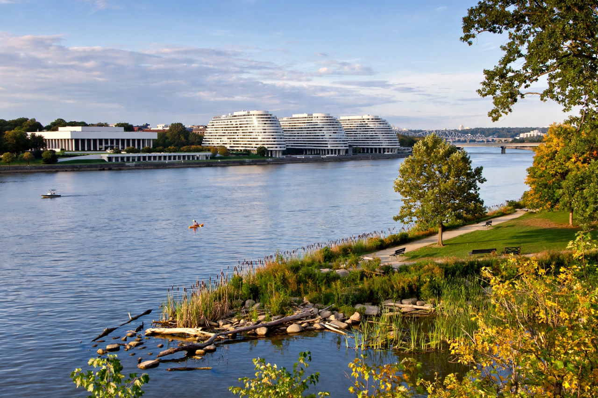

| Watergate complex | |
| Location | Foggy Bottom, Washington, D.C., U.S. |
|---|---|
| Construction | 1962–1971 |
| Architect | Luigi Moretti |
| Developer | Società Generale Immobiliare |
| Components | Six buildings: three residential co-operatives, two office buildings, one hotel/office building; about 10 acres (4 ha) |

The Watergate complex is a group of six buildings in the Foggy Bottom neighbourhood of Washington, D.C., in the United States. Covering some 10 acres (4 ha) adjacent to the Kennedy Center for the Performing Arts, it comprises cooperative apartments, the Watergate Hotel, and office buildings. The complex gave its name to the Watergate scandal, which led to the resignation of President Richard Nixon.
The complex was built between 1962 and 1971 by the Italian firm Società Generale Immobiliare to designs by the Italian architect Luigi Moretti, with sweeping curved facades in an International Style idiom. The name "Watergate" derives from the site's location near a former gate regulating water flow from the Potomac River into the Chesapeake and Ohio Canal — and from the "water gate" steps by the river used for ceremonial arrivals.
On 17 June 1972, five men were arrested inside the headquarters of the Democratic National Committee in the Watergate office building, where they had been planting listening devices and photographing documents. The burglars were linked to the Committee to Re-elect the President, and the resulting investigations by The Washington Post reporters Bob Woodward and Carl Bernstein — aided by the secret source "Deep Throat" — unravelled a wider pattern of political espionage and obstruction of justice that forced Nixon's resignation in August 1974.
So notorious did the name become that the suffix "-gate" has since been applied to countless scandals in English-speaking media.
The Watergate Hotel closed in 2007 and reopened in 2016 after an extensive renovation, playing affectionately on its history ("No need to break in", its key cards read). The apartment buildings remain among Washington's most prestigious addresses.